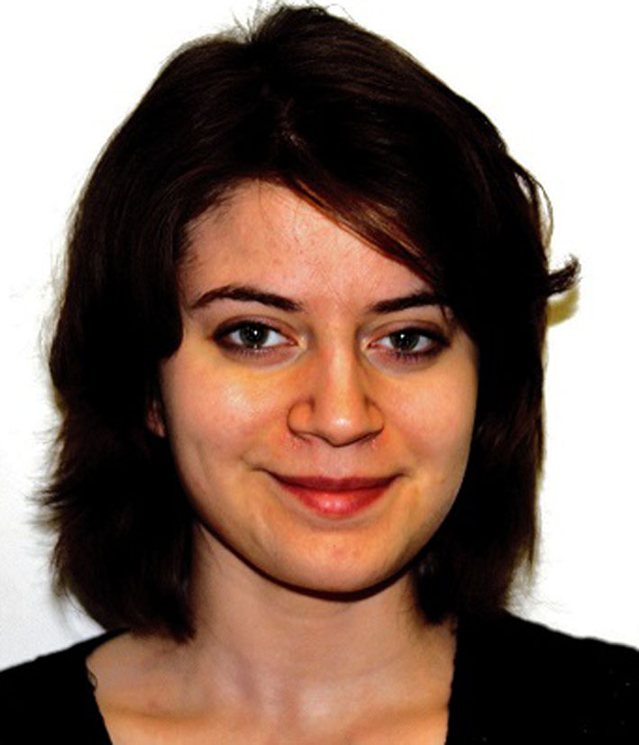
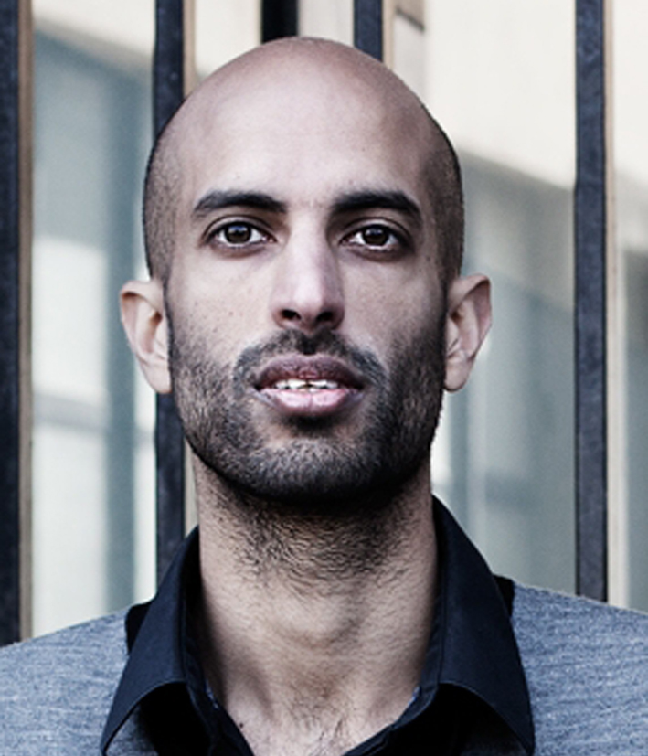
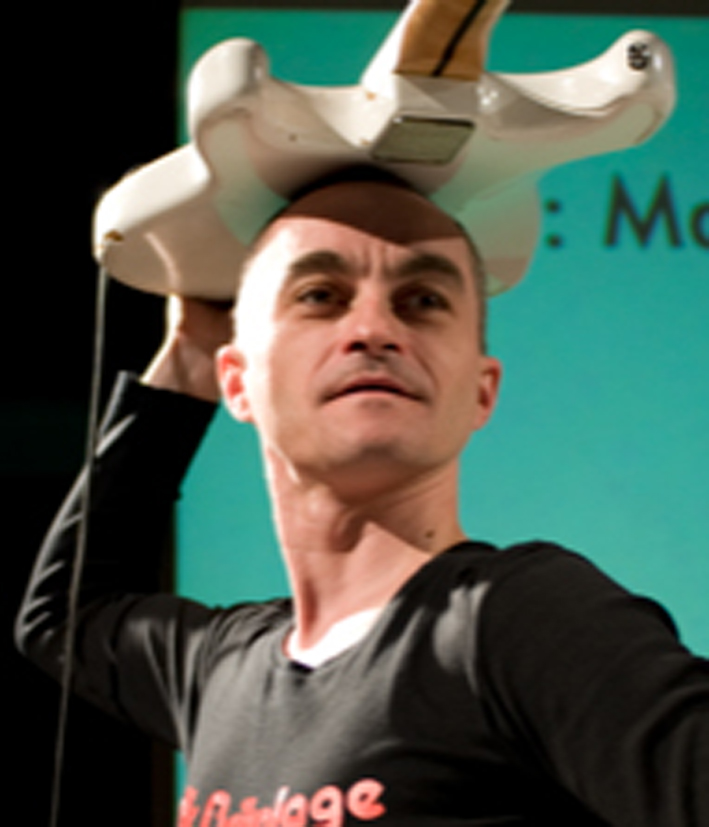
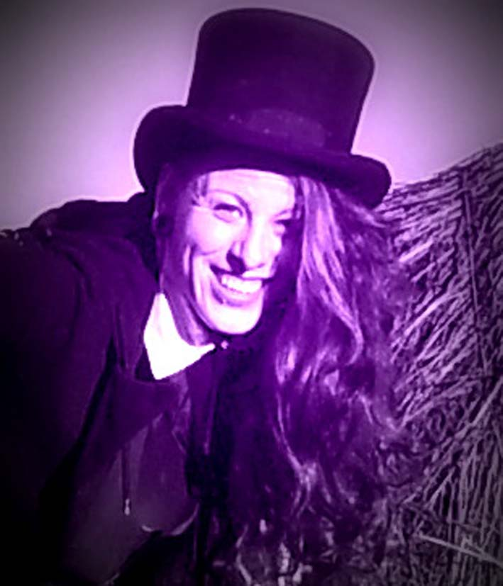
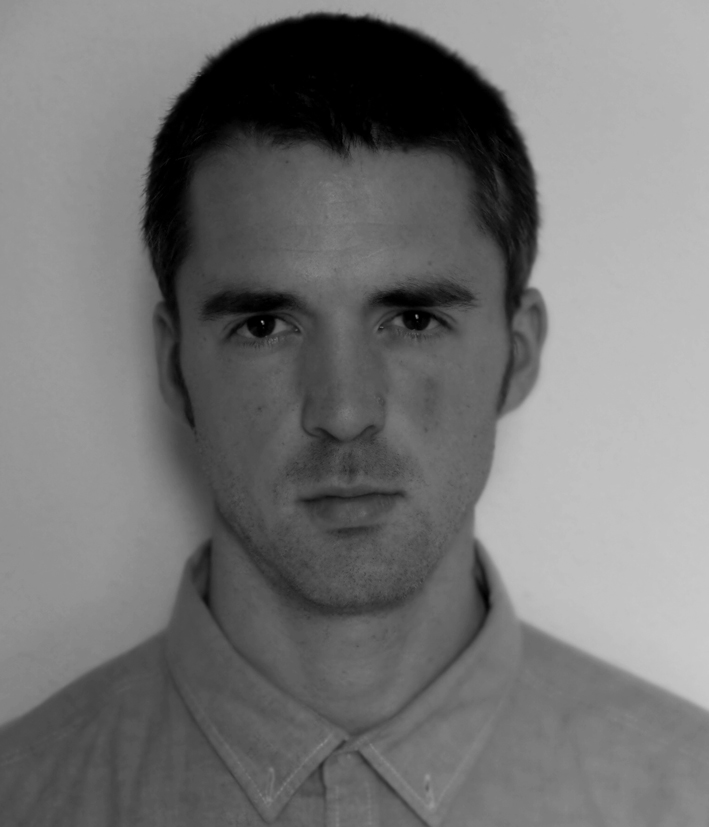
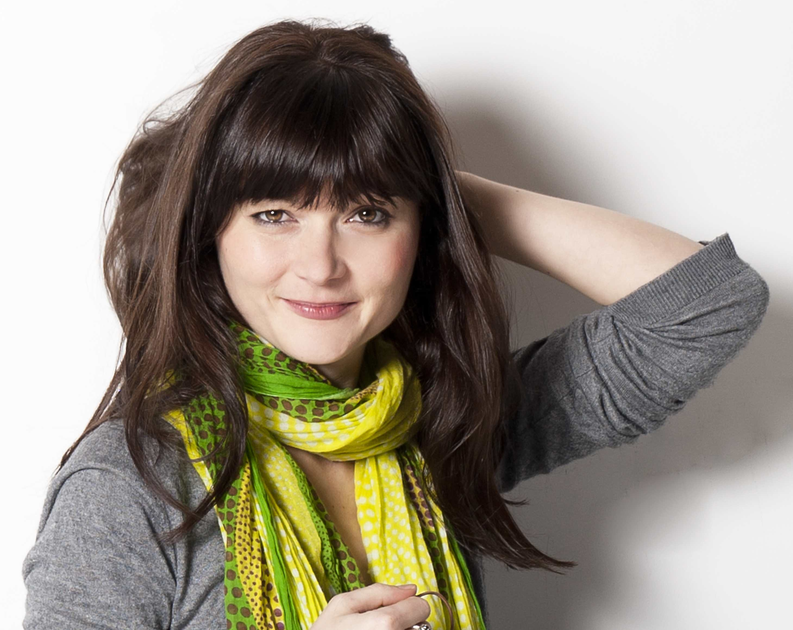
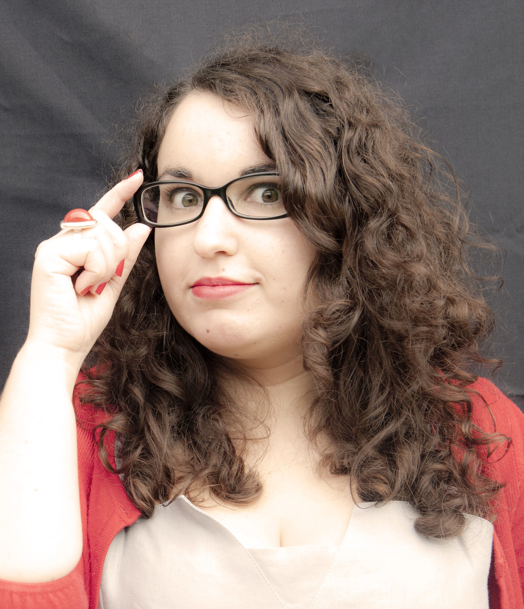
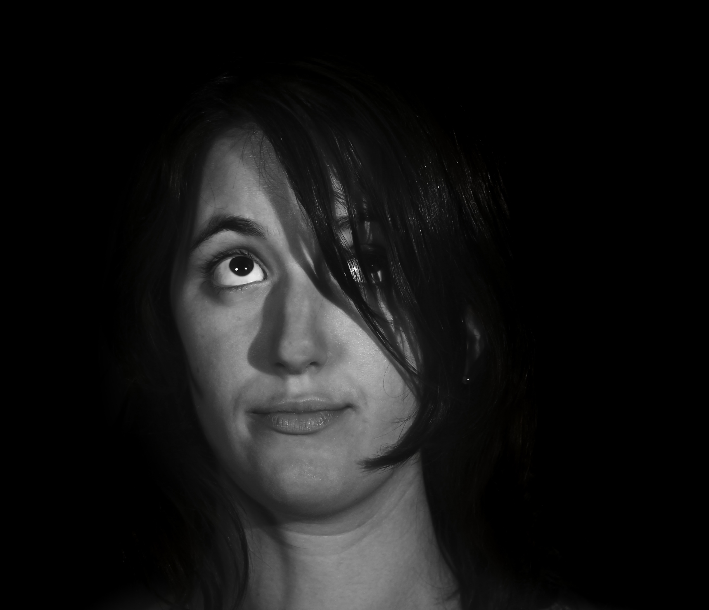
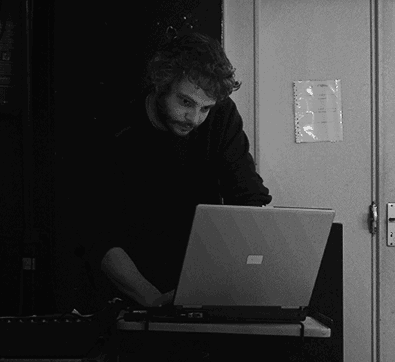

Cristina Tosetto

Elle commence le théâtre au sein de l'Université IUAV de Venise, se
produisant dans différents spectacles sur terre et sur l'eau, pendant trois
ans. Elle se forme avec les acteurs Luca Micheletti et Lino Guanciale et
participe à des stages avec Cesar Brie et Naira Gonzales. Elle
commence aussi à étudier la danse classique de l'Inde: le Bharata
Natyam. Enfin, elle arrive à Bordeaux et participe à d'autres spectacles.
Elle joue et met en scène Le Manifeste Culturiste et Porcherie, d'après
le texte de Pasolini. Elle poursuit ses expériences de danse et de
théâtre tout en travaillant sur sa thèse à l'Université de Bordeaux III.
Rahim Nourmamode

Formé au Cours PeyranLacroix à Paris, il a cofondé deux Compagnies:
"Les Pièces Rapportées" et "Bidibabidibop". Avec la première, il a monté
depuis 2004 cinq projets, pour la plupart inédits en France. Avec la
seconde, il a mis en scène Kroum L'Ectoplasme d'Hanokh Levin, produite
dans plusieurs théâtre parisiens, et a participé à la création d'un court-
métrage : “Le couvent”. Passionné par le jeu, la mise en scène et
l'écriture, il change de rôle suivant les projets ou les combines dans la
dernière création collective des “Pièces Rapportées” :Meurtres en Fête au
ThéoThéâtre à Paris. Revenu à Bordeaux, sa ville natale, il joue dans
plusieurs spectacles pour enfants et développe son goût pour la
pédagogie.
Pierre Lachaud

Diplômé de l’école des BeauxArts de Bordeaux, il a développé un
travail de plasticien et performeur sonore, il a créé des sculptures
sonores touchant à la lutherie expérimentale, des machines sonores
utilisant la lumière, le mouvement et le son de manière ludique
poétique et aléatoire. Son travail s’est développé dans des
performances et des vidéos combinant le visuel et le sonore. « il s’agit
de voir par les oreilles et d’écouter par les yeux » Membre fondateur
du collectif YES IGOR (création de 6 spectacles depuis 2005). Il est
aussi Batteur et Percussionniste dans des groupes de rock (JFG & the
ir regulars , Peru Current) de chanson (papa Boyer, Toi Tarzan Moi
Jane) et de musique expérimentale (Pierre et Monsieur, Jakarta)
Nancy Pobel

Originaire de villeneuve sur lot, non loin d'Agen, elle commence le
théâtre dans une compagnie amatrice, Le Petit Souffle. En 2009, elle
entre dans "le K'baret" de Verteuil d'Agenais, pour y pratiquer la
danse de cabaret et le transformisme. Forte de ces expériences, elle
entre dans l'école de la Compagnie Pierre Debauche au sein du
Théâtre Ecole d'Aquitaine. Elle met également en scène et écrit son
propre spectacle jeune public: « Lylou des Lys ». Elle se forme
également au clown au sein de l’association Nez Libre et découvre
l'effeuillage dans le Bordeaux Collectif Burlesque.
Philippe Wyart

Originaire de la région parisienne, diplomé du conservatoire
d'Utrecht (PaysBas) en piano classique, s'est produit dans divers
festivals de musique classique (Exit Festival, Cultural Zondag) et
de musique contemporaine (Gaudeamus Festival).
En tant que batteurpercussioniste, a participé à divers projets
postrock et musique expérimental. Titulaire d'un diplôme de
technicien son, compose en MAO pour le spectacle vivant et la
vidéo (court et longmétrage).
Christelle Couvelaere

Originaire de Pau, elle fait ses premiers pas sur les planches avec le théâtre de l'Escarpolette, avant d'intégrer au lycée un atelier de théâtre. Elle décide alors de se former au métier de comédienne et intègre les Cours Florent à Paris. Elle vit à présent à Bordeaux où elle travaille pour diverses compagnies : Théâtre Furieux, Le Temps d'un Conte et le collectif Mixeratum Ergo Sum.
Marina Jorge

Après une licence en arts du spectacle et un DUT en gestion culturelle, elle intègre le master mise en scène et scénographie à Bordeaux III et y créé son premier spectacle : Krau (choc). Elle participe en tant que comédienne aux projets de la compagnie Audrey&Damien et du collectif Mixeratum Ergo Sum et fonde en 2014 la compagnie des 108 portes.
Rémi

Plasticienne de formation blablakg qopjf qejgeqjgzmlego ejsqgezsg,selg,oelmjg, esmlg,qklgnezsgoih nerqoglnhresg jezskgnezski
zeg ezsmlkg,ezsjngeisgj ezoghzepogkzpe^j gzjopghez sgzegpz^ejgzeopjgze jgzgzej gze
zeogjzepogjzeogjzeg ze
Louise Nauthonnier

Après une licence et un master théâtre à Strasbourg, elle prépare le master mise en scène et scénographie à Bordeaux. Elle joue pour les Schmoulitz à Phaslbourg puis avec les Occasionneurs à Strasbourg. Elle monte en 2009 Probablement les Bahamas de Martin Crimp, un spectacle de rue 1+1 en 2010 et en juin 2013 un texte de Sylvaine Zaborowski, Iris.
